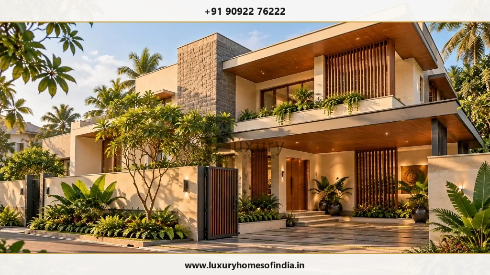
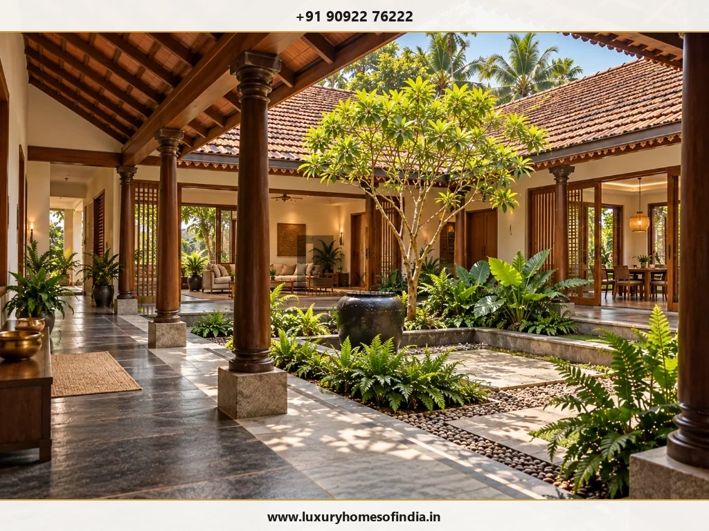
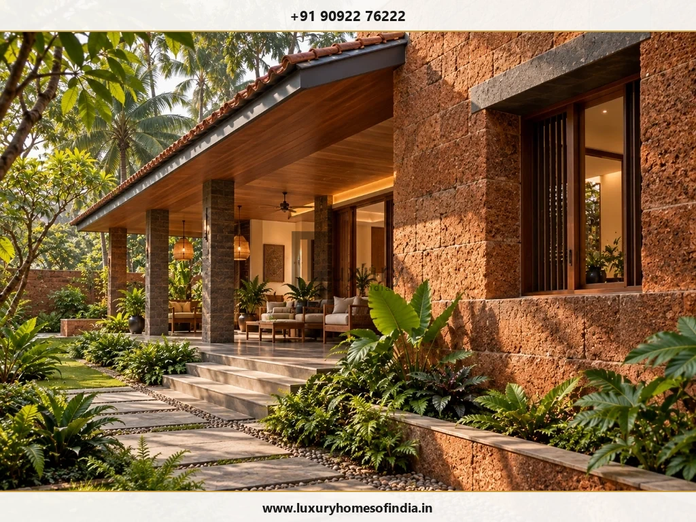
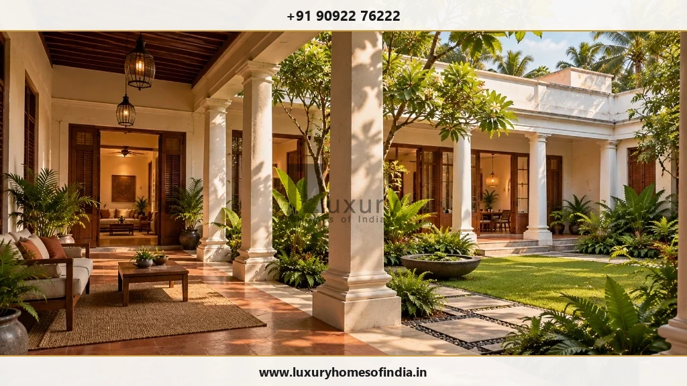

Luxury Villa Architecture in Chennai
A distinctive home begins with a thoughtful plan for the way you want to live.
Executive Summary: Designing Luxury Villas in Chennai
Luxury villa architecture in Chennai requires an integrated approach connecting site microclimate, plot orientation, structural engineering, and family lifestyle requirements. Rather than focusing solely on exterior elevation, successful villa design harmonizes indoor-outdoor courtyards, shaded verandas, coastal material durability, and coordinated MEP services before site construction begins.
A Distinctive Villa Begins with a Thoughtful Spatial Plan
Planning a bespoke luxury villa involves far more than selecting an aesthetic facade or choosing high-end finishes. In Chennai's unique tropical environment, true architectural luxury lies in how a home responds to site microclimates, plot orientation, natural cross-ventilation, privacy, and the everyday movements of the household.
At Luxury Homes of India (LHI), architectural design bridges personal expression with practical engineering constraints. By starting with the daily experiences you want your home to create, our architectural planning establishes a clear spatial hierarchy, microclimate defense strategy, and structural blueprint tailored specifically to your plot.

Begin with the Site, Not Just the Façade
Before deciding on architectural elevation styles—whether modern minimalist, tropical contemporary, or South Indian heritage—it is essential to analyze how the building interacts with its immediate site conditions.
Plot dimensions, cardinal orientation, setback rules, road access, neighboring structures, and Chennai Metropolitan Development Authority (CMDA) / DTCP planning regulations dictate spatial feasibility. A comprehensive site orientation analysis establishes:
- Building Position & Arrival Sequence: Defining main entrances, grand driveways, covered carports, and pedestrian entry gates.
- Vehicular Parking & Visitor Circulation: Separating private garage access from guest parking and service entry routes.
- Spatial Zoning: Creating clear boundaries between public entertainment zones, private family quarters, and back-of-house utility areas.
- Sightlines & View Corridors: Orienting living areas, dining spaces, and master suites toward private gardens or courtyards while screening neighboring views.
- Indoor-Outdoor Transitions: Integrating shaded verandas, central courtyards, swimming pools, and landscaped garden terraces.
- Passive Climate Control: Utilizing solar orientation, overhangs, and wind paths to reduce reliance on mechanical air conditioning.
- Future Adaptability: Designing structural grids to accommodate lift shafts, ramp access, or expanding family requirements.
A well-considered site plan treats outdoor space as an active architectural element rather than leftover ground around a building footprint.
Plan the Villa Around Everyday Life
Bespoke villa design translates your family's routines, entertaining habits, and privacy expectations into tailored spatial volumes.
Shared Living & Entertainment Spaces
Formal living rooms, family lounges, and dining areas should reflect how your household gathers. Consider whether double-height open-plan layouts suit your lifestyle, or if defined formal and informal rooms provide better acoustic separation during social events. Connections between indoor dining rooms, show kitchens, wet kitchens, and outdoor alfresco decks must be planned seamlessly.
Private Family Quarters
Master suites and family bedrooms require acoustic insulation, privacy from street views, and optimized natural light. Circulation corridors, dressing room layouts, luxury ensuite bathrooms, and private balcony access must be balanced with room dimensions and door placements.
Multi-Generational Spatial Integration
Many luxury villas in Chennai accommodate multi-generational families. Ground-floor bedroom suites with barrier-free bathrooms, wide doorways, and direct access to quiet courtyard gardens provide comfort and dignity for elderly parents, ensuring independent living alongside shared family areas.
Dedicated Lifestyle & Recreational Amenities
Whether your brief includes a home theater, private gym, home office, library, or art studio, each room demands specific acoustic treatment, electrical capacity, direct lighting, and specialized HVAC ventilation to fulfill its intended purpose effectively.

Architectural Features That Work as a Cohesive Whole
Architectural elements should enhance livability, spatial flow, and thermal comfort rather than functioning solely as decorative statements.
Central & Peripheral Courtyards
Inspired by traditional South Indian Thotti Kattu and Muttam architecture, central courtyards introduce natural daylight and microclimatic cooling to deep floor plans. Effective courtyard design requires precise calculation of proportions, solar angles, rainwater drainage channels, tile slopes, and insect screens.
Double-Height Living Volumes
Double-height spaces create dramatic visual connections between ground floor living areas and upper floor corridors. However, their inclusion requires careful structural engineering, acoustic dampening panels, specialized lighting design, and high-volume air conditioning load calculations.
Verandas & Shaded Transitional Spaces
Shaded verandas shield exterior walls from direct solar heat while providing usable outdoor living space during monsoon rains. Veranda roof overhangs, column spacing, floor level transitions, and anti-skid natural stone flooring ensure safe, comfortable indoor-outdoor movement.
Glazing, Louvers & Sun Shading
Generous architectural glazing connects living spaces to surrounding gardens. In Chennai's tropical climate, high-performance low-E glass, motorized exterior blinds, vertical timber louvers, and terracotta jaali screens prevent excessive heat gain while maintaining interior brightness.
Private Swimming Pools & Water Features
Integrating a private lap pool or reflection pond demands early structural engineering coordination. Pool plant equipment rooms, chemical storage, deck waterproofing, overflow drainage, and child safety barriers must be integrated into the foundation and layout plans from day one.
Architectural Design Matrix: Feature vs. Execution Strategy
| Villa Feature | Architectural Purpose | Technical & Climate Execution Strategy |
|---|---|---|
| Central Courtyard | Daylight distribution & stack ventilation | Sub-surface drainage, solar orientation, insect mesh, moisture barriers. |
| Double-Height Living | Spatial drama & vertical connectivity | Acoustic wall panels, motorized upper blinds, zoned HVAC ducting. |
| Deep Verandas | Solar heat reduction & monsoon shelter | Thermal break roof slabs, weather-resistant teak/granite, non-slip tiles. |
| Large Format Glazing | Panoramic garden views & seamless light | Double-glazed Low-E glass, aluminum thermal-break frames, exterior louvers. |
| Private Lap Pool | Recreation & luxury ambiance | Dual-membrane waterproofing, isolated foundation structural slab, pump room acoustics. |

Establishing a Coherent Architectural Identity
A memorable luxury villa does not require dozens of competing materials or fragmented exterior forms. Instead, true sophistication comes from a unified architectural vocabulary where proportions, materials, rooflines, and window openings work in harmony.
During architectural development, your design team evaluates:
- Solid-to-Void Ratios: Balancing solid masonry masses with open glass apertures to ensure both thermal mass and visual lightness.
- Regional Material Palettes: Combining local laterite stone, Sadahalli granite, exposed brick, reclaimed teak, and polished plaster for authentic tactile warmth.
- Horizontal & Vertical Expression: Using cantilevered roof slabs and vertical timber fins to guide the eye and define building scale.
- Architectural Lighting Integration: Concealed warm exterior facade lighting that highlights architectural textures at night without light pollution.
- Durability & Low Maintenance: Specifying weather-resistant exterior coatings, anti-corrosive metals, and self-cleaning exterior plaster finishes suitable for Chennai's coastal humidity.
Designing for Chennai’s Microclimate & Environmental Conditions
Building a luxury villa in Chennai requires specialized technical defenses against tropical heat, heavy northeast monsoons, and corrosive coastal air.
Solar Passive Shading & Building Massing
Orienting longer building facades along the east-west axis minimizes direct south and west solar exposure. Cantilevered balcony slabs, deep roof eaves, and perforated jaalis cast protective shade over building walls, significantly reducing indoor air temperatures.
Coastal Corrosion Defense
For villa sites along ECR (East Coast Road), OMR, or coastal micro-zones, salt-laden sea air rapidly corrodes standard structural metals and finishes. Architectural specifications must mandate marine-grade SS316 stainless steel hardware, electro-coated aluminum window frames, fluoropolymer exterior paint, and high-density concrete cover over reinforcing steel.
Monsoon Water Management & Drainage
Chennai's intense seasonal rainfalls require comprehensive rainwater harvesting and surface drainage plans. Sloped terrace drains, heavy-duty scuppers, underground sump recharge wells, and sloped courtyard channels ensure water drains rapidly away from villa foundations.

Coordinating Architecture, Engineering, and Interiors
Architectural decisions directly impact structural engineering, mechanical plumbing, electrical layouts, interior joinery, and landscape architecture. Attempting to design these disciplines in isolation leads to site delays, structural compromises, and budget overruns.
At Luxury Homes of India, architectural design is tightly coordinated with structural engineers, MEP consultants, interior designers, and landscape architects. Scope boundaries, structural column placements, ceiling drop heights, smart-home automation pathways, and underground utility runs are fully resolved on paper before breaking ground.
Give Your Villa a Clear Architectural Direction
Connect your personal vision with expert site microclimate planning, structural engineering, and end-to-end execution support. Schedule an architectural consultation with Luxury Homes of India today.
Structured Architectural Process: Step-by-Step
- Stage 1: Briefing & Site Analysis: Documenting plot dimensions, orientation, soil conditions, budget goals, family requirements, and Vastu parameters.
- Stage 2: Conceptual Layout & Site Plan: Establishing spatial zoning, vehicular entry, building footprint, courtyard placements, and room adjacencies.
- Stage 3: Architectural Character & 3D Refinement: Developing exterior elevations, material selections, shade screens, window proportions, and spatial volumes.
- Stage 4: Technical & Structural Coordination: Resolving structural RCC frame drawings, plumbing layouts, electrical conduits, HVAC ducting, and interior joinery details.
- Stage 5: Execution Drawings & Construction Tender: Preparing working drawings, bill of quantities (BOQ), material specifications, and construction schedules.